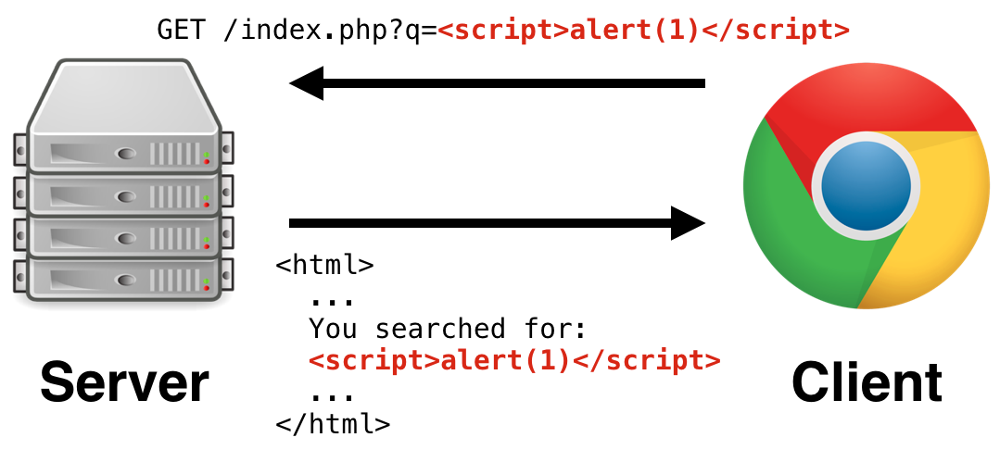

Last Updated on May 12, 2022 | Home
Web Application Vulnerabilities
A web application vulnerability is a misconfiguration, software code flaw, bug or some other weakness in a web application or its components and processes. These vulnerabilities enable attackers to gain unauthorized access to systems, processes or even mission critical assets of an organization. With such access an attacker can takeover applications, engage in privilege escalation to exfiltrate data, orchestrate attacks or even cause large-scale service disruption and much more.
The aim of this write-up is to give concise explanation with practical and easy to understand examples of known vulnerabilities that plague web applications; so as to expose technological inclined enthusiasts, especially newbies in penetration testing to these vulnerabilities.
Sections:
- SERVER SIDE VULNERABILITIES- CLIENT SIDE VULNERABILITIES
- ADVANCED TOPICS (OTHERS)
SERVER SIDE VULNERABILITIES
In a client-server model, a server-side refers to programs and operations that run on the server. Typically a server is a computer application, such as a web server, that runs on a remote computer that is reachable from a user's local computer, smartphone or other devices. As the name implies server side vulnerabilities are therefore flaws present in the server-side of a client-server model that can be exploited by attackers. Server-side vulnerabilities known to web applications include:- SQL Injection
- Authentication
- Directory Traversal
- (OS) Command Injection
- Business Logic Vulnerabilities
- Information Disclosure
- Access Control Vulnerabilities
- File Upload Vulnerabilities
- Server-side Request Forgery (SSRF)
- XML External Entity (XXE) Injection
-SQL Injection
SQL Injection is a type of vulnerability that allows an attacker to interfere with the queries that an application makes to its database, allowing the attacker to interact with data they are not normally able to retrieve. It involves placement of malicious code in SQL statements, via web page input; this can result in unauthorized access to sensitive data such as passwords, personal user information or credit card details. In many cases, an attacker can modify or delete this data, causing damage to changes to the application's content or behavior and in some situations an attacker can escalate an SQL Injection attack to compromise the underliying server or other back-end infrastructure.Identifying the attack surface
SQL Injection are found potentially in areas of a web application where user input is used directly in an SQL query to interact with the database. This could be areas such a login form or the search functionality of a web application.
Example:
 This is a simple form of sql injection. During login the vulnerable application makes the following sql query to its database...
This is a simple form of sql injection. During login the vulnerable application makes the following sql query to its database...
select username,pass from users where username='[user_input]' and password='[user_input]'select username,pass from users where username='admin' and password='password' OR '1'='1'---Authentication
Authentication is the process of verifying the identify of a given user or client. In short, it involves making sure that ehy really are who they claim to be before given access to a particular resource. Robust authentication mechanisms are an integral aspect of effective web security as websites are in part exposed to anyone who is connected to the internet by design. Authentication in web applications can be categorized into three categories:- Something you know; like a password or security question
- Something you have; such as a security token
- Something you are or do; this can be your biometrics such as your fingerprint
- User Enumeration: This is probably the most common authentication vulnerability. It is also usually one of the quickest and easiest to prevent. It is mainly due to different error messages being presented back to the end user when an invalid user attempts to authenticate with the application compared to that of an attempt made by a valid user.
- Weak Password Policy: This happens when a web application allows its users to set weak passwords, as a password's strength is a measure of the effectiveness it provides in resisting guessing and brute-force attacks.
- Non-implemented Brute-Force Protection: A common attack against authentication pages is brute-force attack. A brute-force attack for example, is when an attacker attempts multiple usernames and passwords until they obtain access to a valid account. This type of attack is easier to perform if the application has a user enumeration or weak password policy. An application is prone to this attack when it fails to protect itself from it through methods such as implementing a strict IP-based user rate limiter.
Others include broken password reset systems, lack of additional security measures such as Two-Factor Authentication(2FA) and much more.
-Directory Traversal
Directory traversal, also known as file path traversal is a vulnerability that allows an attacker to read arbitrary files on the server. This might include application code, data, crednetials for back-end systems, and sensitive operating system files. Directory traversal is casued by insufficient security validation or sanitization of user-supplied file names, such that the supplied characters allows the attacker to break out of the web server's root directory and access other locations through the operating system's file system API.Identifying the attack surface
As the name suggest directory traversal vulnerabilities are found in areas of a web application where files contained on the server's file system are accessed in way or the other and are user-controllable.
Example:
 What this php code does is that by default it returns a file in the templates directory called "red.php". But it also checks to determine if the
What this php code does is that by default it returns a file in the templates directory called "red.php". But it also checks to determine if the "COOKIE" header of the request that was made to the server has a
TEMPLATE field. If it does the $template variable is automatically set to the passed value. The variable is then concatenated to the intended file path. Because no proper checks (such as blacklisting)
or input validation is performed on the data returned by the TEMPLATE field of the COOKIE header, an attack against the system could be to send the following HTTP request...
GET /default.php HTTP/1.0
Cookie: TEMPLATE=../../../../../etc/passwd-(OS) Command Injection
OS Command Injection is an attack that involves executing arbitrary commands on a host operating system. Unlike code injection which involves injection of code interpreted or executed by the application, for instance injecting php code into an application; command injection involves executing commands in a system shell or other parts of the environment. Here the attacker extends the default functionality of a vulnerable application causing it to pass commands to the system shell.Identifying the attack surface
Command Injection are found in areas of the application that invoke external commands, i.e any command that is not part of the application and is therefore external to the application. Any of the following scenarios can cause command injection vulnerabilities:
- The application invokes a system shell to execute an external command and passes untrusted data as an argument to the external command.
- The application uses untrusted data to determine which external command to execute
- The application passes untrusted data to an external command, and the external command will invoke additional commands based on untrusted data.
 This javascript code takes the value of the
This javascript code takes the value of the file query that is passed to the /logs endpoint. This value is then used in the exec function
to execute the command; git log --oneline ${file}. Since there is no proper validation or authorization checks done during the process, an attacker can perform command
injection by simply making the following request...
https://[domain]/logs?file=[filename];[command]-Business Logic Vulnerabilities
Business logic vulnerabilities are flaws in the design and implementation of an application that allows an attacker to elicit unintended behavior. It involves ways of manipulating a legitimate functionality or processing flow of an application so as to achieve a malicious goal. These flaws are generally the result of failing to anticipate and handle safely unusual application states that may occur. Commonly referred to as Logic flaws they are often invisible to people who aren't explicitly looking for them as they typically won't be exposed by the normal use of the application. The attacker, however may be able to exploit behavioral quirks by interacting with the application in ways that developers never intended.Identifying the attack surface
Business logic vulnerabilities typically cannot be scanned for as this type of vulnerability is different from other types of vulnerability, which makes it difficult to apply any kind of categorization scheme because it varies depending on the business domain that the application serves. You need to properly understand the intended purpose and the business logic of the application to be able to spot the logic flaws when testing the application.
Example: The products shown in the image can be bought from a shopping application which has a business logic flaw. This allows as an attacker to purchase the first product (Leather Jacket) which costs
$1337.00 for a very low price. He does this by modifying the Add to cart POST request of the second product (Safety First)...
 Because the attacker is able to change the value of the
Because the attacker is able to change the value of the quantity parameter in the post request to negative eighteen (-18), he is able to infer a negative price of -$1315.
Adding the Leather Jacket to cart we have...
Because of the logic flaw in the application the attacker is able to purchase the Jacket for as low as $21.02.
-Information Disclosure
Also known as information leakage, information disclosure occurs when a website unintentionally reveals sensitive information to its users as a result of its failure to protect sensitive information like passwords, financial information, health data or even technical details about the website and its infrastructure. Although some of this information will be of limited user, it can potentially be a starting point for exposing an additonal attack surface, which may contain other interesting vulnerabilities. The information disclosed could even provide answers to the attacker when trying to construct complex, high-severity attacks.Some examples of infomration disclosure include:
- Harcoding sensitive data like tokens, secret_keys, passwords in the source code.
- Transmitting sensitive information in plain text.
- Using old or weak cryptographic algorithms.
- Revealing the names, structure, contents of hidden directories via a robots.txt file or via directory listing.
- Not implementing generic messages for error messages in the application, such as 404 or 505 responses.
- Use of unsalted or simple hashes to store sensitive data.
-Access Control Vulnerabilities
Access control, also known as authorization is the application of constraints on who (or what) can perform certain actions or access resources that they have requested. Access control involves enforcing policies so as to prevent users from acting outside of their intended permissions. In the context of web applications, access control is dependent on authentication and session management. Authentication identifies the user and confirms that they are who they say they are while session management identifies which subsequent requests are being made by that same user. Access control helps to determine if that user is permitted to make that intended request.Broken access control can lead to unauthorized information disclosure, performing functions outside of the user's limits, modification and destruction of data and even privilege escalation. Access control can be categorized into three:
- Horizontal access controls: horizontal access control mechanisms restrict access to resources for users who are specifically allowed to access those resources. Here users have access to resources of the same type but only that which is meant specifically for them. For example, a banking application let's a user view their transaction records but not that of other users.
- Vertical access controls: vertical access control mechanisms restrict access to sensitive functionality that is not available to other types of users thereby making sure that different types of users have access to different application functions. For example, an administrator might be able to modify or delete any user's account, while an ordinary user has no access to these actions.
- Context-dependent access controls: context-dependent access controls prevent a user from performing actions in the wrong order. It restricts access to functionality and resources based upon the state of the application during the user's interaction with it. For example, ensuring that a multistep process is followed sequentially without any steps skipped.
-File Upload Vulnerabilities
A file upload is the transmission of a file from one computer system to another. A file upload vulnerability occurs when a web server allows users to upload files to its filesystem without sufficiently validating the file's properties such as the file's name, type, size and contents. Failing to enforce restrictions enables attackers to upload potentially dangerous files instead. In the worst case scenario, an attacker can potentially upload a server-side script which functions as a web shell, effectively granting the attacker full control over the server.Identifying the attack surface
As the name suggests file upload Vulnerabilities are found in areas of a web application that allows users to upload (transmit) files to its file system. The impact of a file upload vulnerability depends on what restrictions are imposed on the file once it has been successfully uploaded.
Example:
A web application implements a weak validation mechanisms for its file upload functionality as it uses only the
Content-Type header of the
http request to determine the type of file being uploaded so as to permit only jpeg and png images. An attacker trying to upload a shell instead makes the
following request...
 Changing the
Changing the Content-Type header to image/jpeg would effectively enable the attacker to bypass the validation mechanism and successfully
upload the web shell.
-Server-side Request Forgery (SSRF)
SSRF is a web security vulnerability that enables an attacker to induce the server-side application to make requests to an unintended location as the server is essentially used as a proxy to relay the requests. Criminals usually use SSRF attacks to target internal systems that are behind firewalls and are not accessible from the external network or to access services available through the loopback interface (127.0.0.1) of the vulnerable server. In other cases an attacker may be able to force the server to connect to arbitrary external systems.Identifying the attack surface
SSRF Vulnerabilities are typically found in areas of a web application functionality where the server is importing data from a URL, publishing data to a URL, or otherwise reading data from a URL. If the functionality can be manipulated and modified by the attacker, it can be used to make requests to an unitended resource.
Example: In this image a web application is designed to use a POST request to communicate with an internally running website to get details about the amount of a product in stock. Since the request is user controllable, if there are no restrictions implemented in the web application an attacker can communicate with a locally running web server by changing the value of the
stockApi
to...
stockApi=http://localhost/ OR http://127.0.0.1/file:///, dict://, ftp://, and gopher://
to access files on the local system or the internal network.
- XML External Entity (XXE) Injection
The Extensible Markup Language (XML) is a markup language that is commonly used by web/mobile applications, word processors, content management platforms and word processors to store and transport data between computer systems. XML External Entity (XXE) on the other hand is an entirely valid but abusable feature of the XML language as it is frequently enabled by default by standard XML parsers. XXE injection enables an attacker to interfere with an application's processing of XML data allowing the attacker to read local files on the server, perform SSRF attacks (such as accessing internal networks and scaning internal ports) or execute commands on a remote server. In some cases an attacker might be able to leverage XXE injection to exfiltrate data to an external server controlled by the attacker, or to perform denial of service.Identifying the attack surface
XXE injection occurs when an XML input containing references to an external entity is processed by a weakly configured XML parser which has enabled various potentially dangerous features that have not been disabled or validated in some way. XXE injection is therefore found in areas of a web application that makes use of XML to communicate with the web server. The attacker takes advantage of it by embedding malicious inline DOCTYPE definition in the XML data. When the web server processes the malicious XML input, the entities get expanded resulting in the intended action of the attacker being performed by the XML parser.
Example:
 Here the attacker is able to view the contents of a local file called
Here the attacker is able to view the contents of a local file called /etc/passwd via the declared SYSTEM identifier.
The SYSTEM identifier is assumed to be a URI that can be accessed (dereferenced) by the XML processor when processing the entity. The XML processor
then replaced the occurrences of the named external entity xxe; with the contents accessed by the SYSTEM identifier.
CLIENT SIDE VULNERABILITIES
As explained earlier that server-side vulnerabilities are flaws present in the server-side of a client-server model; Likewise, client-side vulnerabilities are flaws present in the client-side of a client-server model. To offer a secure experience, companies must ensure that customers can safely access and engage with their digital business. Client-side vulnerabilities known to web applications include:- Cross-site Scripting (XSS)
- Cross-site Request Forgery (CSRF)
- Cross-origin Resource Sharing (CORS)
- Clickjacking
- Dom-based Vulnerabilities
- Web Sockets
-Cross-site Scripting (XSS)
XSS is a web security vulnerability that allows an attacker to compromise the interactions that users have with a vulnerable application. It is a client-side code injection attack that aims to execute malicious scripts in a web browser of the victim by including malicious code in a legitimate web page or web application. The web page or web application are used as vehicles to deliver the malicious script (after injection) to the user's browser as the actual attack occurs when the victim visits the web page or application that contains the malicious code. This allows the attacker to masquerade as the victim user, perform actions and access any data that the user is able to access. If the compromised user has privileged access with the application, the attacker might be able to gain full control of the application's data and functionality.XSS attacks are possible in VBScript, ActiveX, Flash and even CSS; however they are most common in JavaScript (JS), primarily because JS is fundamental to most browsing experiences. There are three main types of XSS attacks; they include:
- Reflected XSS: This is the simplest form of XSS. It arises when an application includes received data in an HTTP request in an unsafe manner within the immediate response. The malicious script is injected within the data that is returned in the HTTP response.
- Stored XSS: This type of XSS arises when an application receives data from an untrusted source and includes that in later HTTP responses in an unsafe way. In this case the attacker injects malicious code within data which gets stored by the application. If the data is used by the application in later HTTP responses and is not properly cleaned the malicious code gets executed.
- Dom-based XSS: Dom XSS occurs usually when client-side JavaScript processes data from an untrusted source in an unsafe way and writes it back to a sink in the web page.
Cross-site scripting vulnerabilities are found in areas of an application where received user input (URL and non-URL based input) is returned in an application. A proper approach is to submit easily identifiable input into every entry point in an application and identify every location where the submitted input is returned.
Example:
 Malicious code is inputed into the value of the search query
q. When the input is returned by the application, because it is not sanitized properly, the
web browser parses the input as code instead of data which would result in the code being executed (pop up of a dialog box showing 1). This is an example of reflected XSS.
-Cross-site Request Forgery (CSRF)
CSRF is a type of attack that allows an attacker to induce users to perform actions that they do not intend to perform. With a little help of social engineering the attacker tricks the user of a web application into executing actions of the attacker's choosing. If the user is an administrative account, CSRF can compromise the entire web application.Identifying the attack surface
CSRF are found in areas of an application where a user can perform state changing requests such as changing their email address, changing password, transferring funds or even privileged actions such as modifying permissions for other users. For a CSRF attack to be possible, three conditions must be met:
- A relevant action: There is an action within the application that the attacker wants to incude.
- Cookie-based session handling: The application has to rely solely on session cookies for identifying the user and validating the action to be performed by the user. There must be no other mechanisms put in place for validating the request or requests needed to perform that action.
- Total control of request parameters: The requests that perform the action must not contain any parameters whose values the attacker cannot guess or determine. For example, when causing a user to change their email-address, the function is not vulnerable if an attacker needs to know the users's password to effect the change.
An application has a functionality that allows its users to change their email address. When a user peforms this action the following request is made... If the three conditions are met, an attacker can perform the same action by contructing a web page with the following html... If a victim visits the web page, the attacker would be able to change the user's email address.
-Cross-origin Resource Sharing (CORS)
CORS is a browser mechanism that enables controlled access to resources outside of a give domain. It allows resources to be requested from outside the domain (another domain) from which it is located. CORS extends and adds flexibility to the same-origin-policy(SOP).The same-origin-policy (SOP) is a restrictive cross-origin specification enforced by web browsers, which controls access to data between websites and web applications. without SOP any web page would be able to access the content of other pages; which can lead to unauthorized access to sensitive data as well as perform actions on other web pages without consent. In short SOP is a general browser security policy, that helps to make sure that there is no unauthorized cross-site access. It generally allows a domain to issue requests to other domains, but not to access the responses.
SOP is very restrictive and as a result various approaches have been devised to circumvent the constraints as many websites need to interact with subdomains or third-party sites in a way that requires full cross-origin access. A controlled relaxation of SOP policy is possible using CORS. The CORS protocol does this by using a suite of HTTP headers to help define truted web origins and their associated properties (for example, if authenticated access is permitted). The CORS is essentially an http
HEADER
exchange between a browser and the cross-origin web site that a cross-origin request is trying to access so as to determine if the external domain making that request should be
allowed access to its response. CORS vulnerabilities are therefore misconfigurations in its implementation (in a web application) that permits unintended domains from accessing its
resources.
Identifying the attack surface
Since CORS is more of a configuration than an accessible page of a web server, you have to determine if the web server supports it. This can be done by sending CORS requests to the web server and watching its response.
Example:
During CORS negotiation the most important header that is used by the web browser to determine access is the
Access-Control-Allow-Origin header.
Suppose we have a cross-origin request with the following information...
The Host header contains the cross-origin site the request is trying to access. The Origin header contains the external domain that made the request.
If we have the respose from the web server to be...
In the response the external domain that made the request is contained in the Access-Control-Allow-Origin header. What this means is that normal-site.com
permits https://innocent-website.com to make cross-origin requests. The browser would then allows access to the response for that the request. If the content of the
Origin header in the GET request was not contained in the Access-Control-Allow-Origin header, the browser would prevent cross-origin communication between
normal-site and https://innocent-website.com
One of the many possible COSR misconfigurations that can occur is mistakes made from the use of origin whitelists, especially if the rules are implemented by matching URL prefixes, suffixes, or using regular expressions.
Suppose an application grants access to all domains beginning with
normal-site.com, an attacker might be able to gain access by
using the domain...
normal-site.com.evil-site.netnormal-site.com, an attacker might be able to gain access using the domain...
hackersnormal-site.com-Clickjacking
Clickjacking is an interface-based attack in which a user is tricked into clicking an actionable content on a hidden website by clicking on some other content in a decoy website. In a clickjacking attack the user is tricked into interacting with a UI element that they do not see. It depends upon the incorporation of an invinsible, actionable web page containing a button or hidden link, say within an iframe as it is overlaid on top of the user's anticipated decoy web page content. Clickjacking attacks use CSS to create and manipulate layers; The target website's iframe is positioned within the browser so that there is a precise overlap of the target action with the decoy website using appropraite width and height position values.Identifying the attack surface
A page is vulnerable to clickjacking if it doesn't have the
Content-Security-Policy or X-Frame-Options among its HTTP reponse headers. These response headers
protect a page from clickjacking by controlling how a page can be embedded by different sites. They do these by specifying to the browser, parent pages that are allowed to embed the page.
Although there are other methods used to protect against clickjacking such as framebusting which involves modifying a web page HTML code so as to protect the page. However, they are not as
reliable as HTTP header options and in some cases may be circumvented.
Example:
Below is an example of html code that can be used to perform clickjacking attack on a vulnerable website. The width and height position values will be used to position the target website iframe so that there is a precise overlap of the target action with the decoy website. The absolute and relative position values are used to ensure that the target website accurately overlaps the decoy website regardless of browser type, platorm and screen size. The z-index helps to determine the stacking order of the iframe and website layers, those with higher z-index are stacked ontop of those with lower z-index. Finally, the opacity value is used to ensure that the target website is completely invisible to the user.
Attackers may abuse clickjacking for many different purposes. Some include:
- To gain followers on social media.
- To have the user download malware.
- To have the user uknowingly transfer funds to the attacker.
- To have a user buy products in an e-commerce site on behalf of the attacker.
Dom-based Vulnerabilities
The Document Object Model (DOM) is an application programming interface for HTML and XML documents. It defines the logical structure of documents and the way a document is accessed and manipulated. In a web browser the DOM is how a page is represented internally. In an html documentobject refers to "stuff" on the web page which are sometimes called elements or nodes. These objects
include; the contents on the page like words, videos, images; the structural elements on the page like divs, containers, sections; and the attributes on the page
such as classes, styles etc. The DOM is therefore the hierarchical representation of the elements on the page where every object is hierarchically under another object, and any object can have multiple
children but only one parent. In short, the DOM is a model of a set of instructions on how to build a specific web page. It tells a browser how to render the page's content and we can edit the DOM via source code.
Dom manipulation means interacting with the DOM API to change or modify the HTML document that is to be rendered on the web browser. Asides modifying an html document directly there are several methods for manipulating the DOM, the most common being with the use of
JavaScript as it is a core technology of the world wide web and built into web browsers by default.
However, JavaScript that handles data insecurely can enable various DOM-based attacks. DOM manipulation in itself is not a problem. In fact, it is an integral part of how modern websites work. But Dom-based vulnerabilities
arise when a website contains JavaScript that takes an attacker-controllable value known as a source and passes it into a dangerous function, known as a sink.
So what is a source and a sink?
A
source is a JavaScript property that accepts data that is potentially attacker-controlled. For example the location.search property which reads and returns the querystring part of a URL including
the question mark (?). A sink on the other hand is a potentially dangerous JavaScript function or DOM object that can cause undesirable effects if attacker-controlled data is passed to it.
For example, the document.body.innerHTML html sink; it potentially allows an attacker to inject malicious HTML and execute arbitrary JavaScript. Fundamentally, Dom-based vulnerabilities arise when a website
passes data from a source to a sink (commonly referred to as taint-flow) which then handles the data in an unsafe mannner in the context of the client's session.
We have different types of Dom-based vulnerabilities. They include:
- DOM XSS
- Cookie manipluation
- Open redirection
- JavaScript injection
- Link manipulation
- Document-domain manipluation
- Local file-path manipluation
- Client-side JSON injection And much more.
When it comes to Dom-based vulnerabilities identifying the attack surface means identifying points in a web application where user controllable input are read by sources which are then processed in some way with the result passed to sinks.
Typical sources include:
- location
- document.cookie
- document.referrer
- document.URL
- document.URLUnencoded
- window.name
- document.write()
- window.location()
- document.cookie
- WebSocket()
- JSON.parse()
- eval()
Let's take for instance an ecommerce website stores pricing information in cookies for its shopping carts which is used to determine the total price to be paid by the user for all cart items as shown in the image above. An attacker can perform Cookie manipulation to get a reduced checkout price for all items by changing the price of any item...
-Web Sockets
UnlikeHTTP which is half-duplex (unidirectional), WebSockets is a full-duplex (bidirectional) protocol that is used in the same scenario of a client-server
communication. HTTP is a stateless protocol, which means that the connection between the browser and server is lost once the transaction ends; the client sends a request and the server returns a
response. Typically, the response occurs immediately and the transaction is complete.
WebSockets on the other hand is a stateful protocol, which means the connection between the client and the server is kept alive until it is terminated by either party (client or server).
The ws:// URI scheme is used for unencrypted WebSockets (default port 80), and wss:// is used for encrypted (TLS) WebSockets (default port 443).
Web sockets are particularly useful in situations where low-latency or server-initiated messages are required, such as real-time feeds of financial data. They are also commonly used by modern web applications for streaming data and other asynchronous traffic.
WebSocket connections are normally initiated using client-side JavaScript like the following:
var wsocket = new WebSocket("wss://normal-website.com/chat");ws.send("Hello, my name is blacree");{"user":"blacree", "content":"This is a web application vulnerability write-up"}You can easily determine if a web application is using WebSockets through a web proxy. For instance in
BurpSuite you can determine if WebSockets are being used by looking through the
entries appearing in the WebSockets history tab within Burp Proxy.
Finding WebSocket security vulnerabilities generally involves manipulatig them in different ways; such as:
- Intercepting and Modifying WebSocket messages
- Replaying and generating new WebSocket messages
- Manipulating WebSocket connections
In principle, practically any web security vulerability might arise in relation to WebSockets. It all depends on the context in which the communicated data is used. User-supplied input transmitted to the server might and processed in unsafe ways might lead to server-side related vulnerabilities. Those transmitted to other application users, might lead to client-side related vulnerabilities.
Suppose on a chat application when a user sends the following message:
{"message":"Hi, how are you"}<td>Hi, how are you</td>{"message":"<img src='' onerror='alert(1)'>"}- ADVANCED TOPICS (OTHERS)
Thank you for reading my writeup | Home